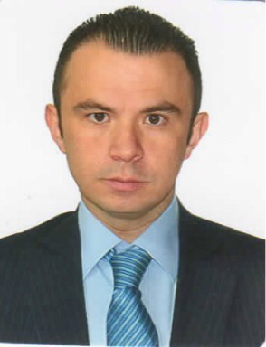

RICARDO ALBERTO FUENTES VELANDIA
Cel. XXX XXXXXXX
ricardo@h.com
PERFIL PROFESIONAL
Ingeniero de Sistemas con Especialización en Ingeniería de Software, Certificado ITIL V3
Foundation/OSA, con experiencia en el Diseño, Coordinación y Desarrollo de la Arquitectura Cloud
AWS y Desarrollo de Software utilizando las siguientes tecnologías: Arquitectura de Microservicios
sobre ECS, funciones Lambda AWS, API-Gateway, Aplicaciones CloudWatch, J2EE, Spring MVC,
Spring Boot, Struts, Servlets, JQuery, JavaScript, CSS, HTML, JSP, JSF, AJAX, Bootstrap.
Persistencia de datos con Hibérnate, JPA, JDBC, MyBatis. Base de datos Oracle PL/SQL, SQL
Server, MySQL, NoSQL DynamoDB AWS, Redis AWS, Consumo e implementación de servicios
REST y SOAP. Maven, Control de versiones (SVN, GIT, Bitbuckert), Construcción de archivos
XML, XSD, JSON, Implementación de SQS y SNS, Docker, Jenkins, CloudFormation y
Metodología Scrum.
Habilidades de organización y una personalidad dinámica. Manejo de compromiso laboral y
dedicación al mismo. Adaptable, eficiente, meticuloso y proactivo.
EXPERIENCIA LABORAL
Dispapeles SAS, Bogotá
Sep/2018 - Actualmente
Jefe Senior de Operaciones - CE
Responsabilidades:
- Administrar, configurar, monitorear y dimensionar conjuntamente con su equipo de
trabajo todas las plataformas relacionadas con los servicios de Colaboración
Electrónica; de tal forma que se garantice su disponibilidad, integridad, seguridad y
funcionalidad.
- Garantizar la estabilidad operacional y correcto funcionamiento de todas las plataformas
de producción asociadas a los servicios de la línea de Colaboración Electrónica.
- Garantizar, gestionar y/o asignar de forma oportuna la asistencia y soporte especializado
respecto a requerimientos, fallas o incidencias presentadas cumpliendo los ANSs
pactados con usuarios y/o clientes. En caso de ser necesario escalarlas y asegurar su
solución por parte de proveedores y/o fabricantes.
FORMACION ACADÉMICA
-
Máster Universitario en Ingeniería del Software y Sistemas Informáticos - UNIR, Actualmente.
-
Especialista en Ingeniería de Software, Universidad Francisco Jose de Caldas,
Bogotá, 2015.
-
Ingeniería de Sistemas, Universidad Católica de Colombia, Bogotá, 2013.
CERTIFICACIONES
-
Java EE 7 Application Developer 1ZO-900.
-
AWS Certified Cloud Practitioner.